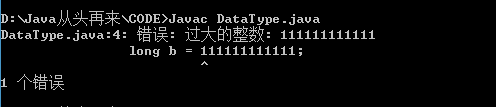
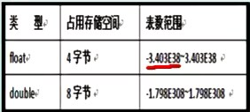
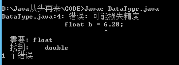
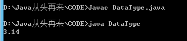
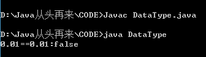
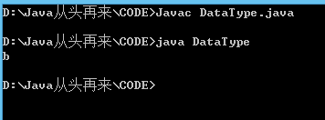

Java中的8种基本数据类型
数值型（4+2），字符型，布尔型
整型
int，数值常量默认为int型

这里解释一下，就拿byte举例吧，byte占用1个字节，为什么表数范围是-128~127呢
首先0~127我们应该好理解，0 000_0000 ~ 0 111_1111
同样-127~-1应该也好理解：1 111_1111 ~ 1 000_0001
-128是怎么来的呢，仔细看看我们是不是少了一个数1 000_0000 ，肯定很多人说这个不是-0吗，其实这个表示-128，这个是规定的，0的补码表示唯一，即0000_0000.
short byte等类型不需要在数字后面加S或者s B（b）等，但是需要注意定义时数字的使用范围。这里顺便说一下char也不需要在后面加c
注意：声明long型的常量最好在常量后面加L（或者l）
实例：
public class DataType{public static void main(String[] args){long a = 100000;//long b = 111111111111;//编译不通过，数值常量默认为int表示的范围long b = 111111111111L;//编译通过，使用L表示long型}}
结果:
long b = 111111111111

long b = 111111111111L
Java中的进制表示
十进制：Java默认使用十进制
八进制：以0开头
十六进制：以0x开头为
实例：
public class DataType{public static void main(String[] args){int a = 10;//十进制int b = 010;//八进制int c = 0x10;//十六进制System.out.println("十进制:"+a);System.out.println("八进制:"+b);System.out.println("十六进制:"+c);System.out.println("十进制10转为二进制:"+Integer.toBinaryString(a));System.out.println("十进制10转为八进制:"+Integer.toOctalString(a));System.out.println("十进制10转为十六进制:"+Integer.toHexString(a));}}
结果：

浮点型
float单精度类型，尾数可以精确到7位有效数字；
double双精度类型，精度是float的2倍，常用类型，浮点数常量默认类型。

注意：声明float型的常量最好在常量后面加F（或者f）
实例：
public class DataType{public static void main(String[] args){double a = 3.14;//float b = 6.28;//编译不通过，浮点型数值默认为double型float b = 6.28F;}}
结果：
float b = 6.28;

float b = 6.28F;
科学计数法
实例:
public class DataType{public static void main(String[] args){double c = 314e-2;System.out.println(c);}}
结果：

浮点数有误差，使用时需要注意
实例：
public class DataType{public static void main(String[] args){double d = 0.1/10;float f = 0.01f;System.out.println(d+"=="+f+":"+(d==f));}}
结果：

BigInteger表示大整数。
BigDecimal表示大小数，可以精确表示。
字符型
char类型用来表示Unicode编码中的字符
单引号''和双引号""分别表示字符和字符串
Unicode编码国际通用，它占2个字节，可以允许有65536个字符
char是在0-65535范围，运算时直接当作整数来运算
可以把0-65535的整数直接强制转换（需在变量前添加(char)，注意需要在char型的表示范围）为char型
实例：
public class DataType{public static void main(String[] args){int i = 98;char c = (char)i;System.out.println(c );}}
结果：

可以查找ASCII码表
字符串
String类，后面介绍
布尔型
boolean，true或者false，默认为false；